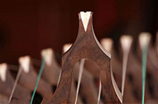
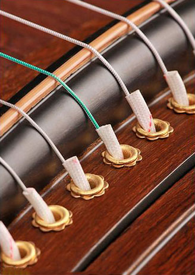
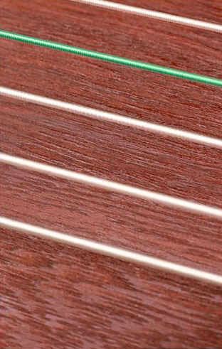
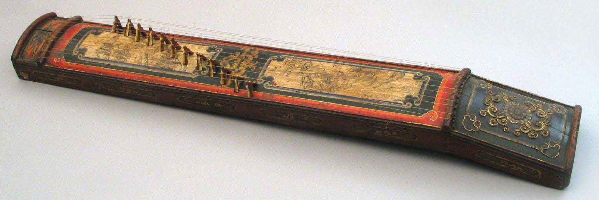
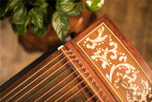
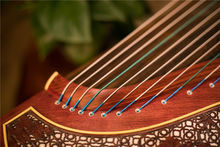
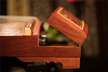

|
 |
 |
 |
 |
筝是我国古老的弹拨乐器之一，到目前为止已有二千多年的历史，因此又被称为“古筝”，英文翻译为Chinese zither。 它的音色优美，音域宽广、演奏技巧丰富，具有相当的表现力，因此它深受广大人民群众的喜爱。古筝因其宽广的音域和丰富的表现力而被人们誉为“中国的钢琴”。这种古老的乐器流传了二千多年，形成了各种音韵特点和不同的演奏技法，其中以浙江、山东、河南、潮州和客家筝曲最为著名，另外还有蒙古筝曲等。
|  |  |  |
| 筝码 | 琴弦 | 面板 |
筝的外观呈扁长形，由框板、面板和底板构成。筝身为中空共鸣体，里面胶有音梁，表面呈拱形，底部开有两三个出音孔。琴的首尾都嵌有岳山，俗称前梁和后梁，前梁至弦柱间为有效弦长。使用由入字形的弦柱支起，柱在面板上可以活动，位置错落如雁行，以取得不同的音高。
|  |
| 清代时期的古筝 |
早在公元前5世纪至公元前3世纪的战国时代，就在当时的秦国（现今的陕西）一带广泛流传，所以又叫秦筝。司马迁的《史记》所记载《李斯列转．谏逐客书》中所引资料，颇有值得我们注意的地方。李斯《谏逐客书中》述及秦国乐舞的一段说：“夫击瓮，叩缶、弹筝、搏髀，而歌呜呜快耳者。真秦之声也。” 计算起来，它已经有2500年以上的历史了。
1979 年，在江西省贵溪县仙岩东周崖墓群中发现了连件筝。其中保存完好的一件，长166 厘米、宽 17.5 厘米，尾宽 15.5 厘米，两端各有十三个弦孔。另一件筝尾残缺，残长174 厘米，筝首弦孔为置木枘（弦轸）用，一弦一枘，栓弦于枘上，类似潮州筝的系弦法。这两件筝的形制、弦数和系弦法与后世古筝相似，是目前我国已知的最早实物。
|  |  |  |
山东筝。山东筝曲多和山东琴、民间音乐有直接联系，曲子多为宫调式，以八大板编组而成。其中一部分是作为琴书的前奏出现的琴曲，跟河南板头曲相似，有六十八板“大板曲”，橡《汉宫秋月》、《鸿雁捎书》等都是。山东筝过去，外边低音部分用的是七根老弦，里边是八根子弦，俗称“七老八少”。演奏时，大指使用频繁，刚健有力。即令是“花指”，也是以大指连“托”演奏的下花指为多；而左手的吟揉按滑则刚柔并蓄，铿锵、深沉，其演奏风格纯朴古雅。
潮州筝。潮州音乐结构特殊，手法别具一格。筝能自成一格而有别于其他乐器，至为重要的就是左手按滑音的变化，即所谓以韵补声，舍此，则很难言筝乐的流派和发展。潮洲筝的主要曲调有“重六”、“轻六”、“活五”、“反线”等。其中“重六”调乐曲比较委婉；“轻六”调乐曲清新明快；“活五”调乐曲缠绵悲切，律调很有特点。
河南筝。河南筝的音阶特点，多用变徵而少用清角，近于三分损益律的七声古音阶，但二变音高，亦非绝对不变，往往会更高按到近于宫和徵，真可谓“七音、六律以奉五声”了。河南筝的曲调，歌唱性很强，旋律中四、五、六度的大跳很多，于清新流畅中见顿挫雄壮；频繁使用的大二、小三度的上、下滑音，特别适合中州铿锵抑扬的声调，使筝曲具有朴实纯正的韵味。在演奏风格上，不管是慢板或是快板，亦无论曲情的欢快与哀伤，均不着意追求清丽淡雅、纤巧秀美的风格，而以浑厚淳朴见长，以深沉内在慷慨激昂为其特色。在傅玄《筝赋》序中对河南筝曲的评价是“曲高和寡，妙技难工”。
浙江筝。浙江筝以“弦索十三套曲”和“江南丝竹’、“杭滩”为源，故曲目的板数已突破了六十八板的体系。乐曲也由单一的乐思发展到复杂的乐曲结构。在演奏风格上，一般节律都比较明快、流畅、秀丽。同时，又由于浙江筝所表现的题材内容比较广，手法比较丰富，因而在风格表现上并未完全单一化。像《高山流水》一曲，各地流传很广，而最早流传于浙江一带，是浙江筝人在传授时的重要曲目。